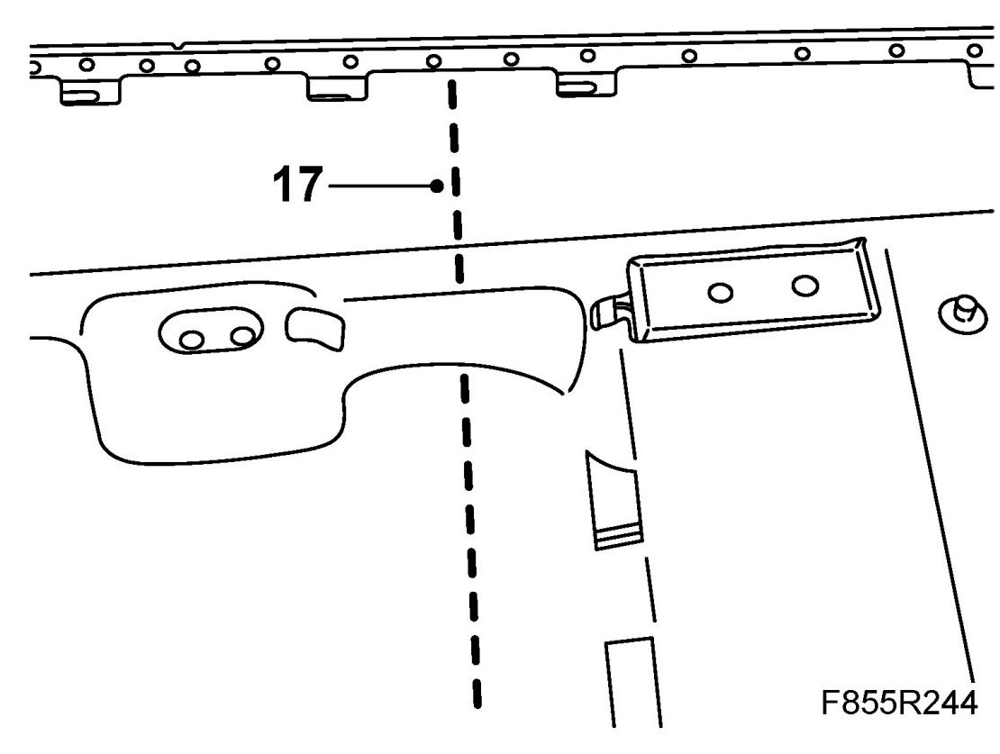
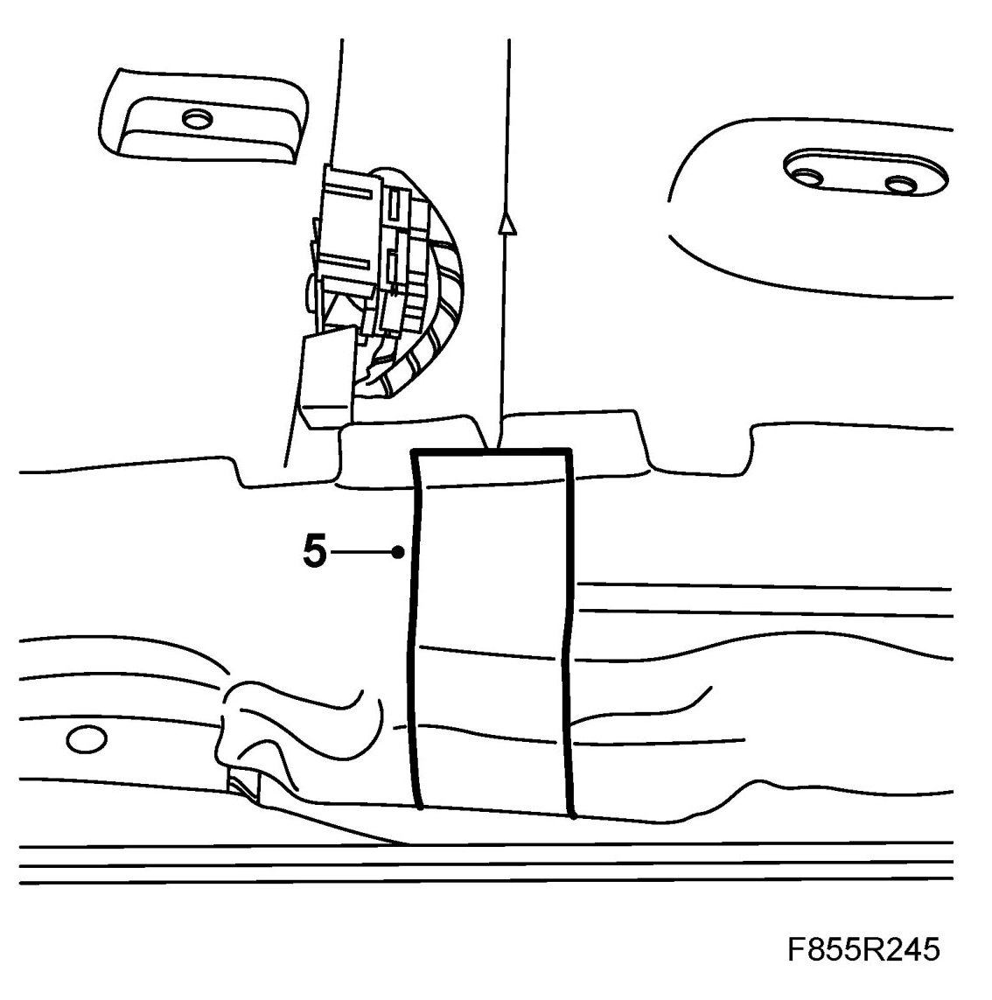

Floor Carpet, Front, CV
Floor Carpet, Front, CV
To remove
1. Remove both front seats.
2. Remove the floor console.
3. Remove the air duct to the rear air vent.
4. Remove the bellows from the air ducts to the rear floor vent.
5. Detach the seats' connectors from the floor.
6. Unhook the hand brake cables.
7. Remove the gear lever housing. Let the cables remain in place.
8. Remove the screws holding the floor console aluminium frame to the floor tunnel.
9. Remove the clips from the leads to the ignition switch.
10. Lift out the centre console aluminium frame with the complete handbrake unit.
NOTE: Note the screw positions.
11. Remove the two lower console support legs.
12. Remove the yaw rate sensor.
13. Disconnect the ACM connector and ground cable.
14. Remove the ACM.
15. Remove the metal support from the exhaust tunnel under the heating and ventilation unit.
16. Remove the doors' scuff panels and the lower A-pillar side panels.
17. Cut the carpet along the marked arrows.

18. Free the carpet from the floor vents.
19. Lift up the carpet around the floor console mountings and screws.
20. Lift out the front carpet.
To fit
1. Lift in and position the front carpet.
2. Slide the carpet under the pedals and the fan housing.
NOTE: The carpet must be behind the sealing gaiter of the steering column console.
3. Fit the carpet over the guide pins and mountings. Manoeuvre the carpet over the air ducts and the seat connectors.
4. Align the front and rear carpets.
5. Tape the carpet underneath along the line of the edge using 30 04 785 Fabric-backed tape black.

6. Fit the scuff plate and the A-pillars' lower side panels.
7. Fit the metal support on the exhaust tunnel under the heating and ventilation unit.
8. Fit the ACM.
Tightening torque: 10 Nm (7 lbf ft)
9. Reconnect and fit the ACM connector and ground cable.
10. Fit the yaw rate sensor.
11. Fit the two lower console support legs.
Tightening torque 32 Nm (24 lbf ft)
12. Position the floor console and handbrake assembly and fit the screws holding the aluminium frame to the floor tunnel.
13. Fit the clips for the wiring harness to the ignition switch.
14. Fit the gear lever housing.
15. Attach the handbrake cables.
16. Fit the seats' connectors.
17. Fit the bellows to the air ducts for the rear floor vents.
18. Fit the air ducts to the rear floor vents.
19. Fit the floor console.
20. Fit the front seats.